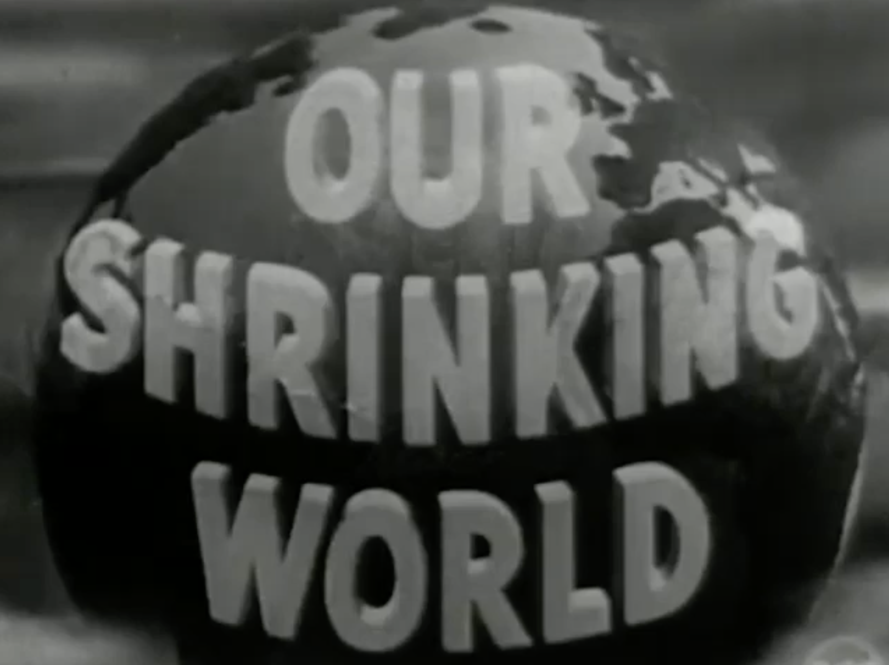

ART 222 Digital Portfolio
PROJECT 1 - LOGO DESIGN
Project Statement:
My design choices for this Southworth Planetarium logo experiment were inspired by four main themes/items that are closely related to the Southworth Planetarium: astronomy, the shape of a dome, Portland Maine, and a curious individual gazing upward toward the interior of the dome.
The first step I took in designing this logo was tracing the shape of Portland Maine's back Cove. I feel that the Back Cove symbolizes the heart of Portland, so I used this shape as a symbol of the planetarium's hometown and location. I filled the Back Cove shape with dark navy blue and green, the two most prominent colors of the Maine flag. These colors reference the location and history of the planetarium, as well as deep outer space (dark navy blue). I placed a planetary ring around the Back Cove shape to represent a planet and the topic of astronomy which the planetarium is based on. The dome shaped line that arches over the planet symbolizes one of the main attractions of the planetarium, that being the 360 degree projection dome that displays star shows and other astronomy related screenings. The dome shape was chosen because it represents a core component of the planetarium, but it is also intended to add a sense of upward movement to the design and emphasize the shape of the planet. The star in the upper left corner of the design is another reference to astronomy and outer space, but it is also intended to activate the negative space that surrounds the planet and add some imbalance to the design to make it more engaging and memorable.
Aesthetic Choices:
Color: The dull green and dark navy blue included in the planet tie to both the Maine state flag and the outer space theme. The deep navy blue adds a celestial vibe, and when combined with the green, references Portland Maine.
Gradient: The gradient transitioning from green to navy blue adds depth, making the planet appear more dimensional and round rather than flat.
Organic Shape: The irregular, fluid/blob-like shape of the planet deviates from the traditional perfectly circular planet shape. This is intended to make the design more eye-catching and memorable.
Line: The black curved line suggests a planetary ring, or an orbital path, hinting at the space theme.
Simplicity and Minimalist Style: The simplification of the logo makes it versatile and easy to reproduce across different branding materials.

PROJECT 2 - PHOTO MANIPULATION
Project Statement:
For this project, I wanted to create two images that depict scenes from a world or future era in which the concept and worship of money has been abandoned. These scenes are intended to have an initial dystopian appearance, but upon further examination, cause their audience to consider the potential harms of money, and what our world would be like if money was either ignored, or no longer existed.
For my first image, shown below, I wanted to create a scene that displays a celebration of the abandonment of money. I included an image of a celebration held around a large bonfire. I then layered in an image of burning money over the bonfire to create the illusion that the celebration was dedicated to the burning of money. I added an ominous sky to the background to strengthen the hell-like dystopian appearance. Lastly, I added in two images of the Charging Bull statue which symbolizes Wall Street and overall financial power and success. In front of the two bulls I put jail cell bars to create the illusion that the bulls are locked up. This is intended to act as another symbol of the abandonment of money.
DOWNLOAD PHOTOSHOP FILEAesthetic choices for scene 1:
Color: An overarching reddish orange hue over the whole scene. This is intended to create an initial hell-like dystopian appearance. This is also intended to hint at the theme of the abandonment of money because red is a complementary color to green (often associated with money) on the color wheel.
Line/repetition: The repetition of human figures holding hands forms a line-like shape and is intended to symbolize togetherness and unity.
Balance and alignment: The humans are arranged in a balanced circle and the bulls in the background are mirroring each other. This adds an overall balance to this scene and is intended to convey a sense of unity and control among the human figures.
Emphasis: The burning pile of money is designed to be the focal point of the scene. It is emphasized by its centrality within the scene.
Proportion: Both the bulls and the pile of burning money will be unrealistically large compared to the human figures to highlight the massive role that money plays in our world.
For my second image,shown below, I wanted to highlight the massive role that money plays in creating power dynamics by creating a scene that depicts a reversal of a familiar power dynamic. I started out with an image of two unhoused people, and replaced their faces with Trump and Musk’s faces. These two individuals hold a great deal of power through their immense monetary wealth. In this image, the thing that brings these two individuals the majority of their power, is being burned and no longer holds value. They are stripped of their dominance. I chose to place this scene (Trump and Musk specifically) in the forest to further illustrate the reversal of this power dynamic. By doing this, these two figures become vulnerable within the scene because they are removed from their typical comfortable industrial habitat. I included the image of the playfully exploring child to add some humor into the scene and also highlight how the abandonment of money would not restrict one from existing playfully and exploring the world, and could potentially even open up more time for such activity.
DOWNLOAD PHOTOSHOP FILEAesthetic choices for scene 2:
Color: The same overarching reddish orange hue from scene 1.
Balance: There is a lack of balance in this scene to create a look of disorder and lack of control. The darkness of the two human figures causes them to carry a visual weight and cause an imbalance.
Repetition: The piles of burning money are repeated throughout the background of the scene to create a sense of disorder and chaos.
Texture: Texture is used to represent the homeless state of the two human figures, through snarled hair and sleeping pads and blankets laid on the ground.
Concept and inspiration:
I have always been fascinated by the idea of a world without money, or at least a world where money plays a smaller role, is worshipped and pursued less, carries less power, and where there isn't such an expansive gap in wealth equality. It seems that so many of the world's issues, like climate change, crime, social isolation, unfair power dynamics, individuals social alienation, etc. stem from money, and the vast majority of modern human actions revolve around the goal of wealth creation. I wanted to explore a moneyless world through creating these two images. I want these scenes to invite their viewers to consider the potential harms of money, and how the riddance of money could drastically shift the way we interact with the world.
Changes made to original plan:
Originally I planned to have the second image set in an abandoned apocalyptic city setting to symbolize the deterioration of the industrial world, but after moving forward with the editing and conceptualization of the scene, I decided on a forest setting instead. I made this decision because I felt that a forest setting best illustrated Trump and Musk being stripped of their dominance and familiar environment.
PROJECT 3 - VIDEO EDITING
Project Statement:
Idea behind the work: For this project, I wanted to create a video that illustrates how industrial development, construction, oil drilling, factorie operations, etc., inflicts harm on our planet and if continued at a rapid pace, could eventually lead to catastrophic consequences. I want this video to show how our planet cannot handle unlimited industrial development.
Creating meaning, and editing choices: The arrangement of the found video and audio footage expresses meaning through its visual and auditory content, as well as its fast paced repetition. I created a repetitive back and forth effect between videos of environmentally harmful industrial development and a single video of the undeveloped natural world. I layered flames over each video section of the undeveloped natural world. Everytime this video repeats, the flames become more opaque, symbolizing how the continuation of industrial development has an increasingly damaging effect on natural ecosystems. Music is a powerful and effective way to attach a certain vibe, emotion, or feeling to a video. I included a fast paced electronic instrumental over the entire video to enhance the intensity of the video and cause the audience to become emotionally attached to the video’s message. I ended this video project with a short video of a mushroom cloud explosion, symbolizing the planet's end that was caused by an excessive amount of industrial development. I want this video of the world's end to bring concern and fear to its viewers and increase their awareness of the negative effects of industrial development on the natural world.
Documentational Stills:
 VIEW & DOWNLOAD MP4 FILE
VIEW & DOWNLOAD MP4 FILE
PROJECT 4 - 3D MODEL
Project Statement:
For this experiment, I will attempt to create an accurate digital 3D model of an iphone 14, which is the phone I am currently using and handle multiple times a day. I have chosen to model my phone because it plays a significant role in my life amd is the object that I handle most regularly.
Design choices:
My goal for this experiment is realism. I will attempt to accurately include every small detail on my phone, including cosmetic wear and signs of use by taking precise measurements and careful observations.
Inspiration and concept:
When I read the description for this assignment, and saw that the object we choose should be on that we handle every day, my phone came to mind. I handle my phone many times a day, yet I am not confidently familiar with all of its design elements. Typically, when using a smartphone, we do nothing but stare uninterruptedly at the screen. I stare at my phone for multiple hours every day, but because this staring targets only one small section of the phone, I am not particularly familiar with the intricacies of my phone's design. I am looking forward to working through this experiment so that I can adopt a new phone viewing perspective, and familiarize myself with the intricacies of the form of an object that plays such a huge role in my everyday life.
Rendered images of 3D model: